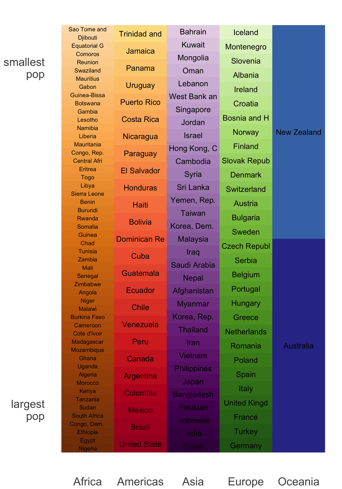
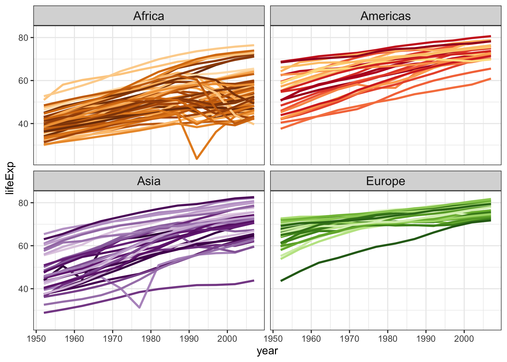
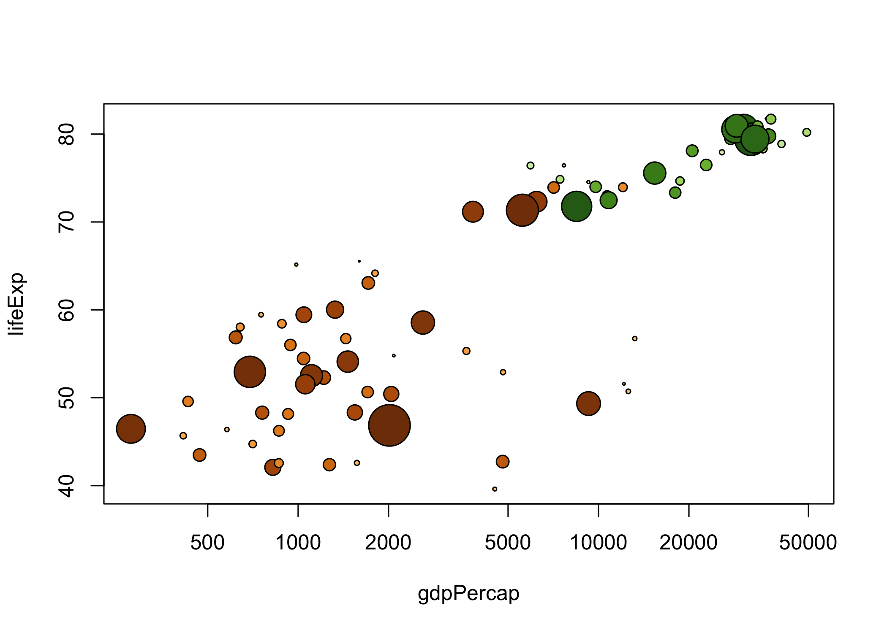

Excerpt from the Gapminder data. The main object in this package is the gapminder data frame or “tibble”. There are other goodies, such as the data in tab delimited form, a larger unfiltered dataset, premade color schemes for the countries and continents, and ISO 3166-1 country codes.
The gapminder data frames include six variables, (Gapminder.org documentation page):
| variable | meaning |
|---|---|
| country | |
| continent | |
| year | |
| lifeExp | life expectancy at birth |
| pop | total population |
| gdpPercap | per-capita GDP |
Per-capita GDP (Gross domestic product) is given in units of international dollars, “a hypothetical unit of currency that has the same purchasing power parity that the U.S. dollar had in the United States at a given point in time” – 2005, in this case.
Package contains two main data frames or tibbles:
-
gapminder: 12 rows for each country (1952, 1957, …, 2007). It’s a subset of … -
gapminder_unfiltered: more lightly filtered and therefore about twice as many rows.
Note: this package exists for the purpose of teaching and making code examples. It is an excerpt of data found in specific spreadsheets on Gapminder.org circa 2010. It is not a definitive source of socioeconomic data and I don’t update it. Use other data sources if it’s important to have the current best estimate of these statistics.
Install and test drive
Install gapminder from CRAN:
install.packages("gapminder")Load it and test drive with some data aggregation and plotting:
library("gapminder")
aggregate(lifeExp ~ continent, gapminder, median)
#> continent lifeExp
#> 1 Africa 47.7920
#> 2 Americas 67.0480
#> 3 Asia 61.7915
#> 4 Europe 72.2410
#> 5 Oceania 73.6650
library("dplyr")
gapminder %>%
filter(year == 2007) %>%
group_by(continent) %>%
summarise(lifeExp = median(lifeExp))
#> # A tibble: 5 × 2
#> continent lifeExp
#> <fct> <dbl>
#> 1 Africa 52.9
#> 2 Americas 72.9
#> 3 Asia 72.4
#> 4 Europe 78.6
#> 5 Oceania 80.7
library("ggplot2")
ggplot(gapminder, aes(x = continent, y = lifeExp)) +
geom_boxplot(outlier.colour = "hotpink") +
geom_jitter(position = position_jitter(width = 0.1, height = 0), alpha = 1 / 4)
Color schemes for countries and continents
country_colors and continent_colors are provided as character vectors where elements are hex colors and the names are countries or continents.
head(country_colors, 4)
#> Nigeria Egypt Ethiopia Congo, Dem. Rep.
#> "#7F3B08" "#833D07" "#873F07" "#8B4107"
head(continent_colors)
#> Africa Americas Asia Europe Oceania
#> "#7F3B08" "#A50026" "#40004B" "#276419" "#313695"
The country scheme is available in this repo as
{kind=link}
How to use color scheme in ggplot2
Provide country_colors to scale_color_manual() like so:
... + scale_color_manual(values = country_colors) + ...
library("ggplot2")
ggplot(
subset(gapminder, continent != "Oceania"),
aes(x = year, y = lifeExp, group = country, color = country)
) +
geom_line(lwd = 1, show.legend = FALSE) +
facet_wrap(~continent) +
scale_color_manual(values = country_colors) +
theme_bw() +
theme(strip.text = element_text(size = rel(1.1)))
#> Warning: Using `size` aesthetic for lines was deprecated in ggplot2 3.4.0.
#> ℹ Please use `linewidth` instead.
How to use color scheme in base graphics
# for convenience, integrate the country colors into the data.frame
gap_with_colors <-
data.frame(gapminder,
cc = I(country_colors[match(
gapminder$country,
names(country_colors)
)])
)
# bubble plot, focus just on Africa and Europe in 2007
keepers <- with(
gap_with_colors,
continent %in% c("Africa", "Europe") & year == 2007
)
plot(lifeExp ~ gdpPercap, gap_with_colors,
subset = keepers, log = "x", pch = 21,
cex = sqrt(gap_with_colors$pop[keepers] / pi) / 1500,
bg = gap_with_colors$cc[keepers]
)
ISO 3166-1 country codes
The country_codes data frame provides ISO 3166-1 country codes for all the countries in the gapminder and gapminder_unfiltered data frames. This can be used to practice joining or merging.
library(dplyr)
gapminder %>%
filter(year == 2007, country %in% c("Kenya", "Peru", "Syria")) %>%
select(country, continent) %>%
left_join(country_codes)
#> # A tibble: 3 × 4
#> country continent iso_alpha iso_num
#> <chr> <fct> <chr> <int>
#> 1 Kenya Africa KEN 404
#> 2 Peru Americas PER 604
#> 3 Syria Asia SYR 760What is gapminder good for?
This excerpt has been used in STAT 545, in R-flavored Software Carpentry Workshops and a ggplot2 tutorial. gapminder is very useful for teaching novices data wrangling and visualization in R.
Description:
- 1704 observations; fills a size niche between
iris(150 rows) and the likes ofdiamonds(54K rows) - 6 variables
-
countrya factor with 142 levels -
continent, a factor with 5 levels -
year: going from 1952 to 2007 in increments of 5 years -
pop: population -
gdpPercap: GDP per capita -
lifeExp: life expectancy
-
There are 12 rows for each country in gapminder, i.e. complete data for 1952, 1955, …, 2007.
The two factors provide opportunities to demonstrate factor handling, in aggregation and visualization, for factors with very few and very many levels.
The four quantitative variables are generally quite correlated with each other and these trends have interesting relationships to country and continent, so you will find that simple plots and aggregations tell a reasonable story and are not completely boring.
Visualization of the temporal trends in life expectancy, by country, is particularly rewarding, since there are several countries with sharp drops due to political upheaval. This then motivates more systematic investigations via data aggregation to proactively identify all countries whose data exhibits certain properties.
How this sausage was made
Data cleaning code cannot be clean. It’s a sort of sin eater.
— Stat Fact (@StatFact) July 25, 2014
The data-raw directory contains the Excel spreadsheets downloaded from Gapminder in 2008 and 2009 and all the scripts necessary to create everything in this package, in raw and “compiled notebook” form.
Plain text delimited files
If you want to practice importing from file, various tab delimited files are included:
-
gapminder.tsv: the same dataset available vialibrary("gapminder"); gapminder -
gapminder-unfiltered.tsv: the larger dataset available vialibrary("gapminder"); gapminder_unfiltered. -
continent-colors.tsvandcountry-colors.tsv: color schemes
Here in the source, these delimited files can be found:
- in the
inst/extdata/sub-directory
Once you’ve installed the gapminder package they can be found locally and used like so:
gap_tsv <- system.file("extdata", "gapminder.tsv", package = "gapminder")
gap_tsv <- read.delim(gap_tsv)
str(gap_tsv)
#> 'data.frame': 1704 obs. of 6 variables:
#> $ country : chr "Afghanistan" "Afghanistan" "Afghanistan" "Afghanistan" ...
#> $ continent: chr "Asia" "Asia" "Asia" "Asia" ...
#> $ year : int 1952 1957 1962 1967 1972 1977 1982 1987 1992 1997 ...
#> $ lifeExp : num 28.8 30.3 32 34 36.1 ...
#> $ pop : int 8425333 9240934 10267083 11537966 13079460 14880372 12881816 13867957 16317921 22227415 ...
#> $ gdpPercap: num 779 821 853 836 740 ...
gap_tsv %>% # Bhutan did not make the cut because data for only 8 years :(
filter(country == "Bhutan")
#> [1] country continent year lifeExp pop gdpPercap
#> <0 rows> (or 0-length row.names)
gap_bigger_tsv <-
system.file("extdata", "gapminder-unfiltered.tsv", package = "gapminder")
gap_bigger_tsv <- read.delim(gap_bigger_tsv)
str(gap_bigger_tsv)
#> 'data.frame': 3313 obs. of 6 variables:
#> $ country : chr "Afghanistan" "Afghanistan" "Afghanistan" "Afghanistan" ...
#> $ continent: chr "Asia" "Asia" "Asia" "Asia" ...
#> $ year : int 1952 1957 1962 1967 1972 1977 1982 1987 1992 1997 ...
#> $ lifeExp : num 28.8 30.3 32 34 36.1 ...
#> $ pop : int 8425333 9240934 10267083 11537966 13079460 14880372 12881816 13867957 16317921 22227415 ...
#> $ gdpPercap: num 779 821 853 836 740 ...
gap_bigger_tsv %>% # Bhutan IS here though! :)
filter(country == "Bhutan")
#> country continent year lifeExp pop gdpPercap
#> 1 Bhutan Asia 1972 41.837 1087991 807.6226
#> 2 Bhutan Asia 1977 44.708 1205659 816.3102
#> 3 Bhutan Asia 1982 47.872 1333704 946.8130
#> 4 Bhutan Asia 1987 50.717 1490857 1494.2901
#> 5 Bhutan Asia 1992 54.471 1673428 1904.1795
#> 6 Bhutan Asia 1997 58.929 1876236 2561.5077
#> 7 Bhutan Asia 2002 63.458 2094176 3256.0193
#> 8 Bhutan Asia 2007 65.625 2327849 4744.6400License
Gapminder’s data is released under the Creative Commons Attribution 3.0 Unported license. See their terms of use.
Citation
Run this command to get info on how to cite this package. If you’ve installed gapminder from CRAN, the year will be populated and populated correctly (unlike below).
citation("gapminder")
#>
#> To cite package 'gapminder' in publications use:
#>
#> Bryan J (????). _gapminder: Data from Gapminder_.
#> https://github.com/jennybc/gapminder,
#> https://www.gapminder.org/data/,
#> https://doi.org/10.5281/zenodo.594018,
#> https://jennybc.github.io/gapminder/.
#>
#> A BibTeX entry for LaTeX users is
#>
#> @Manual{,
#> title = {gapminder: Data from Gapminder},
#> author = {Jennifer Bryan},
#> note = {https://github.com/jennybc/gapminder, https://www.gapminder.org/data/,
#> https://doi.org/10.5281/zenodo.594018,
#> https://jennybc.github.io/gapminder/},
#> }